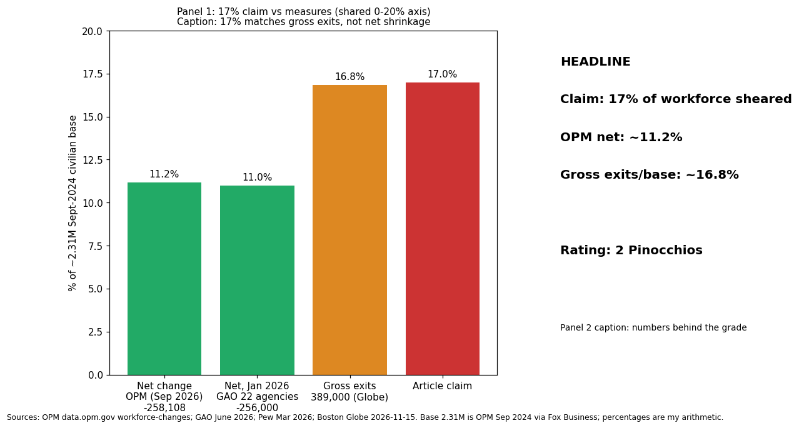

The 17% figure overstates net workforce reduction. OPM shows a net change of -258,108 since Jan 20, 2025 (data as of Sep 2026, partly incomplete), about 11.2% of a ~2.31M base; GAO reports more than 11% (about 256,000) through Jan 2026, and Pew about 10%. Gross exits of 389,000 (as reported by the Boston Globe version, not independently verified) are about 16.8%, so 17% likely counts departures without hires. Grade: 2 Pinocchios.
| Claim | Answer | Confidence |
|---|---|---|
| 17% of employees sheared | Net ~11%; gross ~17% | Medium |
| Workers look to Democrats | Supported by same-day reporting | Medium-high |
| Democrats have competing priorities; reversal may wait | Analysis, not checkable | Low |
| Democrats newly empowered | Reported by Federal News Network | Medium |
Limits: web tool summaries used; base of 2.31M and percentages are my arithmetic.